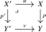
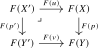

The problem of computing pushouts and pullbacks of animae in terms of pushouts and pullbacks of topological spaces is a special case of a problem that appears in other situations as well: given an \(\infty \)-category \(C\) equipped with a collection of morphisms \(W\) designated as weak equivalences, how can pushouts and pullbacks in the localization \(C[W^{-1}]\) be computed in terms of pushouts and pullbacks in the original \(\infty \)-category \(C\)? The goal of this section is to introduce a general framework for addressing this question, due to Cisinski (2019), Chapter 7 and closely related to Quillen’s framework of model categories [Quillen (1967)]. In the case of pullbacks, the idea is to find a suitable class of morphisms in \(C\) called fibrations with the property that the localization functor \(C \to C[W^{-1}]\) preserves pullbacks along fibrations. In other words: strict pullbacks along fibrations in \(C\) are already the ‘homotopically correct’ pullbacks. Dually, pushouts in \(C[W^{-1}]\) may be computed by finding a class of cofibrations in \(C\) and forming strict pushouts along cofibrations.
Remark 2.2.1. Model category theory has played an important role in the development of homotopy theory, being one of the main theoretical frameworks researchers used for studying homotopy theories before the widespread adoption of \(\infty \)-category theory. A model category is a 1-category equipped with weak equivalences, fibrations, and cofibrations satisfying various axioms that ensure these classes interact appropriately. From an \(\infty \)-categorical perspective, we may think of a model category \(C\) as providing a ‘model’ for its associated \(\infty \)-categorical localization \(C[W^{-1}]\). In particular, the fibrations and cofibrations in a model category do not affect the ‘underlying homotopy theory’ presented by the model category, and should rather be thought of as tools for gaining control over categorical constructions like pushouts and pullbacks in this localization.
Remark 2.2.2. This section can be skipped on a first reading. The only results we will use are the specific consequences for the localization functor \(\Pi _{\infty }\colon \Top \to \An \) stated in Theorem 2.3.8, Theorem 2.3.18; readers willing to accept those as black boxes may safely move to Section 2.3.
Definition 2.2.3 (Class of fibrations). Let \(C\) be an \(\infty \)-category with a terminal object \(*\). A collection of morphisms \(F \subseteq \Map ([1],C)\) is called a class of fibrations if the following conditions are satisfied:
- (1)
-
It contains all the isomorphisms;
- (2)
-
It is closed under composition;
- (3)
-
It is closed under base change: for all morphisms \(f\colon X \to Y\) in \(F\) and \(v \colon Y' \to Y\) in \(C\), the pullback \(Y' \times _Y X\) exists, and the projection \(Y' \times _Y X \to Y'\) is again in \(F\).
A morphism in \(F\) is called a fibration. An object \(X\) in \(C\) is called fibrant if the unique map \(X \to *\) is a fibration. Dually, a collection of morphisms \(I\) is called a class of cofibrations if the corresponding class \(I\catop \) in \(C\catop \) defines a class of fibrations in \(C\catop \). A morphism in \(I\) is a cofibration, and an object \(X\) is cofibrant if \(\emptyset \to X\) is a cofibration.
Definition 2.2.4 (\(\infty \)-category with weak equivalences and fibrations). An \(\infty \)-category with weak equivalences and fibrations is a triple \((C,W,F)\), where \(C\) is an \(\infty \)-category with a terminal object, and \(W\) and \(F\) are collections of morphisms satisfying the following conditions:
- (1)
-
(2-out-of-3) For composable morphisms \(f\) and \(g\), if two of \(f\), \(g\), \(gf\) are in \(W\), then so is the third.
- (2)
-
(Fibrations) The class \(F\) is a class of fibrations.
- (3)
-
(Pullback axiom) For any pullback square

in which \(p\) is a fibration between fibrant objects, and \(Y'\) is fibrant, if \(p\) belongs to \(W\) then so does \(p'\).
- (4)
-
(Factorization axiom) For any morphism \(f\colon X \to Y\) in \(C\) with fibrant codomain, there exists a morphism \(w\colon X \to X'\) in \(W\) and a fibration \(p\colon X' \to Y\) such that \(f = p \circ w\).
The morphisms in \(W\) are called weak equivalences. Morphisms in \(W \cap F\) are trivial fibrations. We similarly define an \(\infty \)-category with weak equivalences and cofibrations by dualizing (replacing \(F\) with a class of cofibrations \(I\) and appropriately modifying axioms (3) and (4) to involve pushouts and cofibrant objects).
Example 2.2.5. Let \(C\) be an \(\infty \)-category that admits a terminal object and admits all pullbacks. Then we may turn \(C\) into an \(\infty \)-category with weak equivalences and fibrations by taking \(W\) to consist only of the isomorphisms and \(F\) to consist of all morphisms in \(C\).
Example 2.2.6 (Structures on \(\Top \)). As will be discussed below, the category \(\Top \) can be equipped with such structures relevant to \(\An \simeq \Top [W^{-1}]\) where \(W\) is the class of weak homotopy equivalences:
- \((\Top , W, I=\text {relative cell complexes})\) is an \(\infty \)-category with weak equivalences and cofibrations (see Theorem 2.3.8). The cofibrant objects are the cell complexes.
- \((\Top , W, F=\text {Serre fibrations})\) is an \(\infty \)-category with weak equivalences and fibrations (see Theorem 2.3.18). All objects in \(\Top \) are fibrant in this structure.
The following definition captures those functors that preserve the relevant structure:
Definition 2.2.7 (Left exact functor). Let \((C, W_C, F_C)\) and \((D, W_D, F_D)\) be \(\infty \)-categories with weak equivalences and fibrations. A functor \(F\colon C \to D\) is called left exact if:
- (1)
-
\(F\) preserves terminal objects.
- (2)
-
\(F\) sends fibrations between fibrant objects in \(C\) to fibrations in \(D\), and trivial fibrations between fibrant objects in \(C\) to trivial fibrations in \(D\).
- (3)
-
For any pullback square in \(C\)
in which \(p \in F_C\) and \(Y, Y'\) are fibrant in \(C\), the induced square

is a pullback square in \(D\).
If \(C, D\) have weak equivalences and cofibrations, we say that \(F\colon C \to D\) is right exact if \(F\catop \colon C\catop \to D\catop \) is left exact (relative to the dual fibration structures). In particular, \(F\) preserves initial objects and pushouts along cofibrations between cofibrant objects, provided that the other object in the span is also cofibrant.
We now come to the main result of this section, which we will state as a black box:
Theorem 2.2.8 (Cisinski (2019), Proposition 7.5.6, Theorem 7.5.18). Let \((C,W,F)\) be an \(\infty \)-category with weak equivalences and fibrations, let \(C_f \subseteq C\) be the full subcategory of fibrant objects, and write \(W_f\) for the weak equivalences between fibrant objects.
- (1)
-
The inclusion \(\iota \colon C_f \hookrightarrow C\) induces an equivalence \[ \overline \iota \colon C_f[W_f^{-1}] \xrightarrow {\simeq } C[W^{-1}]. \]
- (2)
-
The localization \(C[W^{-1}]\) has finite limits (i.e., a terminal object and pullbacks), and the localization functor \(\gamma \colon C \to C[W^{-1}]\) is left exact (when \(C[W^{-1}]\) is given the trivial structure as in Example 2.2.5).
- (3)
-
For any \(\infty \)-category \(D\) with finite limits, composition with \(\gamma \) induces an equivalence \[ \Fun ^{\lex }(C[W^{-1}],D) \iso \Fun ^{\lex }_W(C,D) \] between left exact functors \(C[W^{-1}] \to D\) and left exact functors \(C \to D\) that invert the morphisms in \(W\). In particular, every left exact functor \(C \to D\) which inverts the morphisms \(W\) induces a left exact functor \(C[W^{-1}] \to D\).
Corollary 2.2.9. Let \((C,W,I)\) be an \(\infty \)-category with weak equivalences and cofibrations, let \(C_c \subseteq C\) be the full subcategory of cofibrant objects, and write \(W_c\) for the weak equivalences between cofibrant objects.
- (1)
-
The inclusion \(\iota \colon C_c \hookrightarrow C\) induces an equivalence \[ \overline \iota \colon C_c[W_c^{-1}] \xrightarrow {\simeq } C[W^{-1}]. \]
- (2)
-
The localization \(C[W^{-1}]\) has finite colimits (i.e., an initial object and pushouts), and the localization functor \(\gamma \colon C \to C[W^{-1}]\) is right exact.
- (3)
-
For any \(\infty \)-category \(D\) with finite colimits, composition with \(\gamma \) induces an equivalence \[ \Fun ^{\rex }(C[W^{-1}],D) \iso \Fun ^{\rex }_W(C,D). \]
Proof. Apply Theorem 2.2.8 to the opposite category \(C\catop \). □
Thus the localization of an \(\infty \)-category with weak equivalences and fibrations (respectively, cofibrations) may be computed using only its fibrant (respectively, cofibrant) objects, without choosing replacements functorially.
The exactness results above cover the interaction of localizations with pushouts and pullbacks. We will now extend this discussion to arbitrary limits and colimits, following Cisinski (2019), Section 7.7
Definition 2.2.10. Let \(C\) be an \(\infty \)-category with weak equivalences and fibrations. We say that \(C\) is homotopy complete if the following two conditions are satisfied:
- (1)
-
The product \(\prod _{i \in I} X_i\) of any small collection of fibrant objects \((X_i)_{i \in I}\) exists in \(C\) and is again fibrant;
- (2)
-
Given a small collection \((f_i\colon X_i \to Y_i)\) of morphisms between fibrant objects, if each \(f_i\) is a fibration (resp. trivial fibration), then also \(\prod _{i} f_i\) is a fibration (resp. trivial fibration).
A functor between homotopy complete \(\infty \)-categories with weak equivalences and fibrations is called homotopy continuous if it is left exact and preserves small products of fibrant objects.
Dually, we say an \(\infty \)-category with weak equivalences and cofibrations \(C\) is homotopy cocomplete if \(C\catop \) is homotopy complete; we obtain the analogous notion of a homotopy cocontinuous functor.
Theorem 2.2.11 (Cisinski (2019), Proposition 7.7.4, Theorem 7.7.6). Let \(C\) be a homotopy complete \(\infty \)-category with weak equivalences and fibrations, and write \(L(C):=C[W^{-1}]\) for its localization.
- (1)
-
The localization \(L(C)\) has small limits, and the localization functor \(\gamma \colon C \to L(C)\) is homotopy continuous;
- (2)
-
If all objects of \(C\) are fibrant, then \(L(C)\) is in fact universal with this property: for any \(\infty \)-category \(E\) with small limits, the functor \(\gamma \) induces an equivalence of \(\infty \)-categories \[ \gamma ^*\colon \Fun ^{\lim }(L(C),E) \iso \Fun ^{\mathrm {hcont}}(C,E), \] where the right-hand side denotes the full subcategory spanned by the homotopy continuous functors.
- (3)
-
Given a homotopy continuous functor \(F\colon C \to D\), the induced functor \(L(F)\colon L(C) \to L(D)\) preserves small limits;
The dual result holds for homotopy cocomplete \(\infty \)-categories with weak equivalences and cofibrations.
Generated from the authoritative LaTeX source.